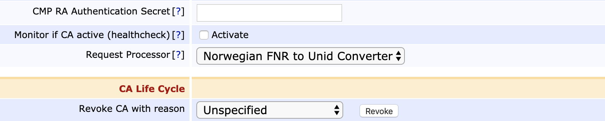

EJBCA 7.4 Upgrade Notes
Below are important changes and requirements when upgrading from EJBCA 7.3 to EJBCA 7.4. For upgrade instructions and information on upgrade paths, see Upgrading EJBCA. For details of the new features and improvements in this release, see the EJBCA 7.4 Release Notes.
Required Procedures
In versions of EJBCA prior to 7.4.0, the Request Processors (as defined by the org.cesecore.certificates.ca.ExtendedUserDataHandler interface) were defined by setting them as the certreqhandler.class property for individual CMP aliases. In EJBCA 7.4.0, use of Request Processors has been extended to the REST and WS APIs as well, and thus their configuration moved to individual CAs instead. This change can't be made automatically, so to keep using Request Processors on existing installations, use the following procedure to maintain 100% uptime:
Upgrade EJBCA on all existing nodes in a cluster but do not yet run post-upgrade.
On each CA meant to use Request Processors, edit that CA and choose the used implementation:
After all CAs have been configured, run post-upgrade in order to remove the vestigial property from the CMP aliases.
Database Changes
New Table OCSPResponseData
EJBCA 7.4 contains a new table called OCSPResponseData for storing canned OCSP responses.
This table is created automatically by Hibernate when EJBCA 7.4 is deployed for the first time. However, if the database user is not granted CREATE TABLE privileges, you need to add this table manually before deploying EJBCA. SQL scripts for adding this table are located in doc/sql-scripts/.
Also, add the new indexes manually as follows:
CREATE INDEX ocspresponsedata_idx1 ON OcspResponseData (cAId);CREATE INDEX ocspresponsedata_idx2 ON OcspResponseData (serialNumber);CREATE INDEX ocspresponsedata_idx3 ON OcspResponseData (nextUpdate);New Indexes for CRLData
Since the introduction of partitioned CRLs in EJBCA 7.1.0, it has come to our attention that the default index recommendations in doc/sql-scripts/create-index-ejbca.sql no longer work if partitioned CRLs is enabled for a CA. See ECA-8680 for more information.
To fix this, EJBCA will attempt to modify existing indexes during a post-upgrade to EJBCA 7.4.0 as shown in the table below:
|
Operation carried out during a post-upgrade to EJBCA 7.4.0 |
Name of index |
SQL query |
|
Remove index if it exists |
crldata_idx3 |
DROP INDEX IF EXISTS crldata_idx3 ON CRLData; |
|
Remove index if it exists |
crldata_idx4 |
DROP INDEX IF EXISTS crldata_idx4 ON CRLData; |
|
Create new index unless it already exists |
crldata_idx5 |
CREATE INDEX IF NOT EXISTS crldata_idx5 ON CRLData(cRLNumber, issuerDN, crlPartitionIndex); |
|
Create new index unless it already exists |
crldata_idx6 |
CREATE UNIQUE INDEX IF NOT EXISTS crldata_idx6 ON CRLData(issuerDN, crlPartitionIndex, deltaCRLIndicator, cRLNumber); |
If the EJBCA database user does not have sufficient permissions to modify these indexes, an error will be printed in the log but the post-upgrade will succeed. You can then modify these indexes manually.
Behavioral Changes
Stricter Certificate Extensions Check
Earlier versions of EJBCA did not report any error when certificate extensions were present in an End Entity (for example in Web Service requests), but not allowed in the Certificate Profile. In this case, the disallowed certificate extensions were silently ignored.
Since the earlier behavior could potentially cause compliance issues, EJBCA will now report an error and abort issuance if the request contains an extension that is not allowed by the Certificate Profile.
This check is only performed when the certificate extensions are specified in the End Entity. There is no change to the behavior when certificate extensions are specified in a CSR. That is still controlled by the setting Allow extension override by CSR.
CA/B Forum OrgID Check in External Request
If the CA/B Forum Organization Identifier is present in the external request (for example in Web Service requests), but the corresponding Use checkbox in the End Entity Profile is cleared and the one in Certificate Profile is selected, then the certificate issuance will fail with the appropriate error message (previously the certificate was issued successfully).
In case the request does not contain a CA/B Forum Organization Identifier and the Use checkbox related to it in the Certificate Profile is cleared, but in the End Entity Profile set to Used and Required and Modifiable without a predefined value, the certificate will fail to issue (previously the certificate was issued without the CA/B Forum OrgID inside it).
If a predefined value is present in the End Entity Profile , then the certificate will be issued using that value even if the CA/B Forum Organization Identifier is missing in the request.
SCEP Security Fix - More Restrictive CA Access
In earlier versions of EJBCA, the CA for SCEP was only restricted by the configured End Entity Profile and Certificate Profile. The RA CA Name option, while documented as restricting the CA, was in fact only used as a default option.
As of EJBCA 7.4.0 (and 6.15.2.5, 7.3.1.1) a SCEP alias will only allow issuance using the CA selected as RA CA Name. This CA must still be selected in the configured End Entity Profile and the Certificate Profile.
Ignoring Empty Default CA Issuers URI Regardless of how CA was Created
Previously there was an inconsistency between CLI and UI created CAs when issuing certificates with:
In the certificate profile Authority Information Access>Use CA defined CA issuer enabled.
In the CA, no default CA issuer URI was set.
With a CLI created CA issuance failed, while with a UI created CA issuance succeeded without a CA Issuer URI in the issued certificate. The behavior has now been made consistent with UI created CAs, i.e. when no CA defined CA issuer URI is configured certificate issuance is successful, without any CA issuer URI in the issued certificate. See ECA-8788 for more details.
SCEP Failure Return Codes modified
The following return codes in SCEP have been modified to better align with the draft and return SCEP FailInfo errors.
|
State |
Previous Return Code |
New Return Code |
|
Attempting to perform client certificate renewal using an expired client certificate |
HTTP Status 400 (Bad Request) |
badRequest(2) |
|
Attempting to perform client certificate renewal on a revoked client certificate |
HTTP Status 401 (Unauthorized) |
badRequest(2) |
|
Attempting to perform client certificate renewal on a user with status 'revoked' |
HTTP Status 401 (Unauthorized) |
badRequest(2) |
RFC 5019 Cache Headers added to POST
In previous versions of EJBCA, only GET requests had the RFC 5019 cache headers. These have now been added to POST as well.
Post Upgrade
When upgrading to EJBCA 7.4.0, you must perform a post-upgrade after all nodes have been upgraded. The post-upgrade is required because of a change in how partitioned CRLs are represented in CRLData. The post-upgrade will also reindex CRLData if the database user has sufficient privileges.
To perform the post-upgrade, click the EJBCA System Upgrade menu option, and then click Start post-upgrade. For more information, see Upgrading EJBCA.